While Scrolling in our phones we see various exotic and beautiful locations. It leaves a mild sweet and sour sensation inside our hearts. The sensation grows into desire to visit various places and replenish our soul.
Travelling has its therapeutic benefits. No doubt because many want to spend their whole life travelling. Well, some are already doing it and showcasing their journey on various social media platforms.
A journey encompasses thrill, spirit of adventure, and rejoiceful surprises. People love to capture the moments and display it on social media handles. Most loved and liked personalities on social media platforms like YouTube, present their whole journey in video formats. These personalities are commonly known as Travel YouTubers, but let us explain you in detail!
Who are Travel YouTubers?
Travel YouTubers are travel domain opinion leaders. They undertake various journeys, find undiscovered destinations, acknowledge local cuisines, and bring us closer to the serene beauty of nature and urban interfaces.
Travel YouTubers create various videos, reels, shorts, etc with a purpose to help the audiences realise the essential beauty that they are missing in their life. They are so influential that most travellers decide their journey plans based on travel YouTubers recommendations.
Types of Travel YouTube Channels:
1. Pocket Friendly Travel YouTubers:
These travel YouTubers plan and ideate a travel and trip plan within a monetary limit. They talk in detail about each step and expenses involved. These videos give a lump sum idea of the whole budget requirement during the trip.
2. Undiscovered Locations:
These wanderlust travel YouTubers scavenge for locations that they have not seen before. Every location is unique and because of this it makes undiscovered locations more exciting as it is filled with surprises and authenticity.
3. Adventure Travels:
Travellers are hardcore enjoyers. They always try to test their limits and for testing limits adventure travels are the best way. Hiking, mountaineering, bungee jumping, rafting, etc are part of adventure travelling.
4. In Consonance with Nature and Sustainability:
Pollution is a major threat affecting the whole travel domain. There are many travel YouTubers who talk about sustainable ways of travelling through nature and travel, both can be secured without affecting each other.
You can leverage these travel YouTubers as a brand as well in the form of videos that you can post on your social media, as an ad or review, etc with the help of the top video production agency in India, which is a revolution in the world of video marketing. They handle the whole process from finding the ideal creator, and scripting to shooting in professional studios and monitoring for you. This technique is the most effective one right now as over 61% of people trust the recommendations of creators as per socialshephard.
Let us look at the top 20 travel YouTube channels in India who are dominating the space with something unique to offer which you can leverage as well with the help of Vidzy:
List of Best Travel YouTubers in India in 2024
Contents
- 1. Mumbiker Nikhil
- 2. Jasminder Singh
- 3. Jatt Prabhjot
- 4. Shubham Kumar
- 5. Karl Rice
- 6. Mohit Manocha
- 7. Kamya Jani
- 8. Mohommad Salim Khan
- 9. Varun Vagish
- 10. Deepanshu Sangwan
-
1. Nikhil Sharma
YouTube Channel: Mumbiker Nikhil
USP:
His videography and narration are all you need to know about the most beautiful places.
With 4.03 million subscribers and 1.5 billion views overall, Nikhil (real name Nikhil Anil Brijlal Kumar Sharma) is a popular travel vlogger on YouTube. He has meticulously vlogged and uploaded his journeys on his YouTube channel while traveling the length and breadth of India, from Kashmir to Kanyakumari, Kutch to Sikkim. It's fascinating to watch Nikhil's vlog from Kashmir to Kanyakumari. Due to unforeseeable and unavoidable circumstances, he was forced to change his starting location from Srinagar to Jammu. But as he points out, to enjoy the journey, you must be prepared to accept these changes in your plans. Sit still and gaze into the charming Gurudongmar lake close to the Chinese border, or climb up to the well-known Banjhakri waterfall in Gangtok.
Nikhil's travel vlogs from all over the world include visits to the United States, Qatar, Canada, Turkey, South Korea, Singapore, Greece, and other locations. Because of his enormous reach, Mivi, InterMiles, Dineout, MakeMyTrip, Goibibo, Tripoto, CRED, and other businesses have collaborated with him. Our True Story, one of his most popular videos, received 3,399,847 views, 163k likes, and 15116 comments. In a video titled "Ye sab public demand pe kiya hai," which received 121k likes and 2312 comments, he declares his love for his audience. Make sure you check out the content of one of the best travel YouTube channels in India.
-
2. Jasminder Singh
YouTube Channel: JS Films
USP:
His unique style of providing information regarding different places makes him stand apart from the competition.
The JS films YouTube channel is run by Jasminder Singh, also known as Jaysn. Jaysn is a typical example of an "extrovert on a bike," with an exceptional ability to connect with his audience thanks to his funny humour and Desi flair. You'll frequently find yourself laughing aloud while watching one of his movies. He enjoys riding bikes and shares their desire to travel the globe. He produces videos about the motorcycle lifestyle, bike reviews, travel adventures, store visits, bike launches, destination features, the culture and heritage of various Indian regions, and custom motorcycles, among other things. He is an Indian motorcycle enthusiast's rock star.
He has traversed difficult terrain all over the nation, from numerous brief weekend excursions to 30-day road trips. He has performed in places like Dhanaulti, Manali, Shimla, Spiti, and North Sikkim. Numerous videos, such as Race Day, New Haya Busa, Ferrari Guy Loved by Ninja, Delhi to Jaipur, and many more, have been posted by him. He participated in a jam session in Kanyakumari, sampled regional cuisine in Mangalore, drove a supercar in Hyderabad, enjoyed the sand dunes in Bikaner, and participated in a farmer's protest in Delhi. Finally buying my DreamBike - Ninja H2," his most popular video, received 468K likes, 16,932 comments, and more than 7 million views. On his YouTube channel, he has an engagement rate of 1.01%. He promotes a variety of goods, including MIVI, etc because of the authority he has generated by being one of the most famous travel vloggers in India.
-
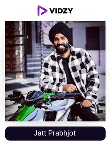
3. Jatt Prabhjot
YouTube Channel: Jatt Prabhjot
USP:
His consistency and quality make him hard to beat.
Born in New Delhi on December 9th, 1992, Jatt Prabhjot is a well-known YouTuber who is well-known for his amazing travel-related videos. He is well-known for being a food vlogger. He posts videos of long rides, food reviews, family outings, and motorcycles. He enjoys travelling to new places. He has taken vacations in a variety of locations, including Lamayuru, Bangkok, Singapore, Saach Pass, and many others. His travelling Soulmates include the Range Rover Evoque, FZ 150, BMW GS 310, and BMW GSA 1250 motorcycles. His engagement rate is good at 2.09%. He updates his channel every day with new videos. His audience engagement rate has greatly increased because of his consistency and diligence.
You can find anything related to riding and travelling on this channel, and the creator promises you'll enjoy it all. His total views have exceeded 832 million, placing him among the top travel vloggers on YouTube India. Additionally, he has a million Instagram followers.
-
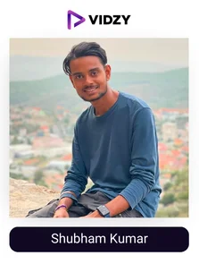
4. Shubham Kumar
YouTube Channel: Nomad Shubham
USP:
His ability to capture the best moments and edit it professionally is what has helped him reach to the top of the race.
One of India's newest travel vloggers is Shubham Kumar, age 19. When he finished his 12th grade in 2018, he made the decision to launch his YouTube channel. His YouTube channel, Nomad Shubham, is one of the fastest-growing travel channels on the platform. To date, he has travelled to more than 20 nations and 19 states in India. He has travelled about 50,000 km by hitchhiking and is currently hitchhiking across 40 countries from India to South Africa. He started watching YouTube travel videos and stumbled upon Tomislav Perko's Ted Talk, which gave him the idea to travel the world on a tight budget.
He is presently residing in the UAE. Throwing water in Siberia at -47 C is one of his most well-liked YouTube shorts. I almost died in the Nile River, his sixth video from the Egypt series, has received 4,969,431 views. Although Shubham doesn't appear to be particularly polished and elegant in his videos, he is unquestionably one of the best Indian travel vloggers and one of the youngest and fastest growing.
-
5. Karl Rice
YouTube Channel: Karl Rock
USP:
He is a unique personality who has won millions of hearts with his great and informational travel videos.
An ex-pat Kiwi who speaks Hindi named Karl Rice, also known online as Karl Rock, gives viewers an inside look at India and its neighbors. In his movies, he offers advice to help foreigners travel successfully and safely in India as well as aiding them in better comprehending the country. He is referred to as "the modern-day Lonely Planet guide" by The Indian Express. He claims in his YouTube videos that India has the world's most stunning white sand beaches, clear water, fascinating marine life, coral, and tropical islands. The stunning Andaman and Nicobar Islands Union Territory of India is a favourite destination for his audience. He began posting videos at Kala Pathar beach, one of the most stunning and amazing places in incredible India.
On average, 202K people watch his videos on his channel, and the engagement rate is 0.18%. In order to encourage others to fall in love with the continent, he has visited every state and union territory in India as well as its culturally similar neighbours Pakistan and Bangladesh. Manisha Malik, an Indian woman from Haryana, is the spouse he has. He resides in New Delhi with his wife's family. Make sure you check out the content of one of the best travel vloggers in India.
-
6. Mohit Manocha
YouTube Channel: TravelingDesi
USP:
He makes his travel videos into an experience for you with his amazing shots and editing.
Travelling The idea for Desi came from Mohit Manocha. In just over three years, his YouTube channel has more than 2.82 million subscribers and more than 672 million views. He published his first video in June 2018, and as evidence of his commitment to his profession, his channel now has over 1000 films. His channel tells the tale of an Indian entrepreneur who became a YouTuber and travelled through more than 25 countries, sharing his travel adventures, before settling down with his Canadian soulmate. He claims that life has dramatic twists and turns, and his ongoing story is about all of them. He has toured the majority of North America, Southeast Asia, and Europe.
According to socialmediatoday, 52% of users were inspired to book new trips by their favourite creators posts, and travelling desi has a significant influence because he is the master of travel vlogs. In his videos, he discusses travel expenses, how to budget for a trip, and where to go in various countries, etc making him extremely reliable. His engagement rate is 0.92 percent.
In one of his posts, he detailed how he found a cheap flight from India to Europe and provided a thorough explanation of his flight booking experience. He also offers tricks and tips for finding low-cost international flights. Check out the content of one of the top travel vloggers on YouTube India
-
7. Kamya Jani
YouTube Channel: curlytalesdigital
USP:
She has a fun-loving personality and passion to explore the unexplored making all her videos interesting.
Your one-stop shop for everything related to travel is this top Indian travel YouTuber! A well-known website for all things related to travel, food, lifestyle, and experiences is Curly Tales, which was founded by Kamya Jani. All 123 cities across more than 40 nations have not yet been visited by Kamya. There is still a lot for this digital nomad to learn and share with her 2.34 million+ YouTube subscribers! Kamya Jani has you covered for everything from mouthwatering food to inspiring travel ideas to mind-blowing experiences! You can avoid becoming a digital nomad by learning about fascinating and exciting things to do locally and globally.
Permission leni chahiye na, her YouTube video alone received more than 31M views, and "Sunday Brunch With Ajay Devgn & Kajol Devgn" received more than 13M views. She has 3000+ videos total and a 0.21% engagement rate. The "I Love My India" playlist features some of the most alluring places and experiences that India has to offer. Would you like to sample some authentic Gujarati food? Watch this video to learn more about Ahmedabad's 100-year-old vintage restaurants! If you're in India, do you want to go to Bali? Travel to Igatpuri now! Have you ever travelled to Goa for a destination besides the beaches? You'll visit some of Goa's most intriguing locations with Curly Tales.
You can get lost in Portugal's narrow streets made of cobblestones with Kamya's 8-day itinerary. Travel to New Zealand if you enjoy adventure sports and the Lord of the Rings movie series. Consume Nawabi biryani or Bahubali Thali (it must be an epic thali! ), and explore the mountains of Ladakh or the vast deserts of Oman. Eat vada pavs or chaats on the streets of Delhi in Mumbai. Curly tales will help you explore all of this and more!
-
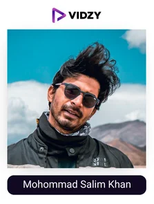
8. Mohommad Salim Khan
YouTube Channel: MSKvlogs
USP:
If you are interested in bikes and travelling no need to look further as he beats everyone in the category with his quality videos.
Mohammed Salim Khan, aka MSK Vlog, was born in Pune on June 5th, 1989. He is a Mumbai, India-based Vlogger and content producer who focuses on transportation, fashion, and travel. He graduated with a B. Com from the College of Arts, Science, and Commerce of the Rizvi Education Society. He mostly bikes long distances, like across cities, while filming his journey. On June 25, 2016, he uploaded his first video, and as of today, he has more than 1.7 million subscribers.
Mohammed Salim Khan has been producing YouTube content for more than 5 years and has made a name for himself as one of the most famous travel vloggers in India. His success story was covered by numerous Indian media outlets as well. He has given speeches at TEDx events as well, making him one of India's most popular travel YouTube channels. The oldest stone structure in Abu Dhabi, Qasr Al Hosn Fort, was featured in one of his popular videos. He enjoys purchasing fashionable traditional Arabic attire for celebrations. He regularly posts Hindi-language vlogs to his YouTube channel, either at 9 a.m. or 3 p.m. Additionally, he enjoys disseminating his travel and lifestyle videos in order to inspire, inform, and entertain.
India's Maharashtra, Andaman & Nicobar Island, Kerala, Goa, Madhya Pradesh, Gujarat, Himachal Pradesh, Jammu & Kashmir, Ladakh, and Karnataka are among the states he has travelled through. He has also travelled to places like Thailand, Laos, Dubai, Nepal, and Abu Dhabi. His Triumph Tiger 800 XC, Hero XPulse 200, Volkswagen Polo, and Toyota Fortuner are all popular vehicles with spectators. He has more than 1000 views and a 1.60 percent engagement rate. Check out what he has to offer.
-
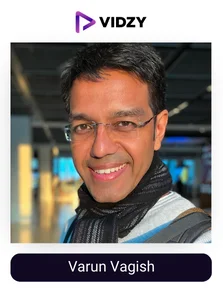
9. Varun Vagish
YouTube Channel: mountaintrekker
USP:
With lovely communication skills and passion for travelling, he is able to churn out the best travel videos.
One of the most well-known or best travel vloggers in India today, Dr. Varun Vagish has more than 1.57 million YouTube subscribers. He began his vlogging career in March 2015. Before starting his full-time YouTube career, Varun worked as a radio newsreader and was the love of millions of travel enthusiasts. He holds a doctorate in mass communication. He is a former journalist, radio newsreader, and academic, and he has spent the last 15 years travelling the globe. He travels constantly today, has vlogs about his adventures, and to top it all off, the Government of India presented him with the National Award for promoting tourism.
He has worked with brands, airlines, and international tourism boards on numerous occasions. His videos persuaded viewers to step outside their comfort zones and discover the environment. He brings people of various backgrounds together through the art of storytelling. The recurring themes revolve around the socioeconomic situation of a settlement, environmentally friendly travel, and empirically learning about heritage/cultural and morphological/semantic multiplicities. His intention is to inform and empower his audience about the fundamental function of the travel and tourism industry to craft cost-effective travel suggestions and encourage leading an attractive, informed, and happy life.
-
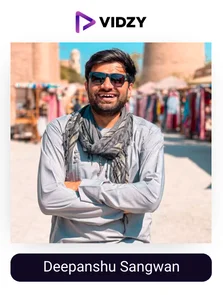
10. Deepanshu Sangwan
YouTube Channel: NomadicIndian
USP:
He keeps his travel videos authentic and simple.
When Deepanshu made the choice to pursue his dream of becoming a traveller in February 2017, it was the most significant choice of his life. To pursue his love, he put his SSC and CAT exam preparation on hold, and he hasn't looked back since. He claims to be from various regions of the nation. His hometown is in Bikaner, Rajasthan, though. He has lived in New Delhi, Mumbai, and Chandigarh currently. He frequently travels to Rajasthan to see his parents, and he vlogs about them and his hometown. He enjoys extreme sports like rafting, spelunking, nighttime desert excursions, Game of Thrones, playing badminton, and cliff jumping. He is an adrenaline junkie. He had visited many nations, including Iran, Afghanistan, Mongolia, and many others, that were considered to have dangerous environments.
He travelled with Shubham Yadav (Nomad Shubham) through Mongolia's most dangerous desert dunes, the Khongor Els. He advises philosophically, "Cut the crap out of your life, live the life you've always dreamed of, because good times won't come until you make this time good." He has over 500 videos on his channel, and they have received 261,359,721 views on average.
-
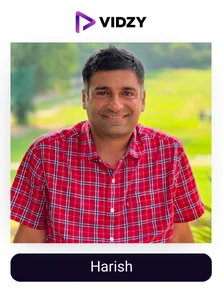
11. Harish
YouTube Channel: visa2explore
USP:
Food and travel, he mixes both and gives you a surreal experience.
In order to share his culinary and travel experiences, Harish started this channel in January 2017. As of now, he is one of India's top travel YouTubers for the year 2022. He initially posted about his food experiences for amusement, but when he realized that people were curious about what he was uploading and asking about the location, flavours, recipes, restaurants, etc., he started to think more carefully about his travels in search of new and old food traditions as well as new viewpoints. He traversed the cities in search of delicious recipes from various regions to share with his target audience.
You can use this channel to find out about fun places to go and eat. For instance, he travelled to Jaipur, Rajasthan, and made movies about the best places to visit, including how long it takes to get there by car, the top sights to see, and how to plan a tour. He keeps exploring food in the same way he always has, sometimes in restaurants and sometimes in street food. This gives him a good idea of the flavour and quality of the food. He talks about his experiences on this channel. For instance, he visited Jaipur in Rajasthan and produced videos of places to see, emphasizing the amount of time it will take to get there. This is one of the channel's main draws. He aids travellers in choosing their destinations.
-
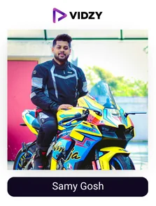
12. Samy Gosh
YouTube Channel: BeerBikerSamy
USP:
His enthusiastic energy and beautifully shot videos will make you hooked to his channel.
BeerBiker - A travel vlogger, content producer, and social media creator by the name of Samy Ghosh. Having started in January 2018, he now has more than 1.36 million subscribers to his YouTube channel. A channel about touring the most picturesque locations on superbikes (He rides his Superbike Kawasaki Z800 & a 2013 KTM Duke 390.) and presenting it in the most likeable way possible. This channel has received over 149 million views because of its lovely images, consistency, etc.
He travels from one state to another on a bike for thousands of miles. His videos are thrilling and entertaining. His movies are bursting with adventure and freedom. In his vlogs, he has gone on numerous adventurous rides. He travels from one state to another on a bike for thousands of miles. His videos are thrilling and entertaining. Additionally, he produced several videos with his girlfriend, "Manjari," who is a motorcycle vlogger. Through his diligent work, he successfully established himself as a social media creator. Additionally, he has over 181K Instagram followers. Check out the content of one of the most subscribed travel Youtube channel in India!
-
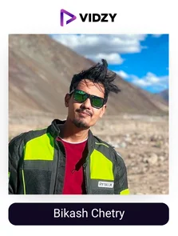
13. Bikash Chetry
YouTube Channel: I Love Travel and Food
USP:
His ability to find something new to offer is what is making him win.
Ikash Chetry, a travel YouTuber, creates internet blizzards with his bizarre vlogs. His hometown is Rupnagar in Guwahati, Assam. He began as an event manager. He then developed an interest in YouTube in addition to his job. He soon quit his job and made the decision to live an original life. He discovered that making interesting YouTube videos and entertaining people was his life's mission. His YouTube channel is an Assamese vlog channel that, as the name suggests, is all about food and travel. He launched his YouTube channel on April 18, 2018. He has received over 151,276,314 views overall thanks to the distinctive way he presents everything. He possesses the ideal element to be popular on YouTube.
He had a lifelong desire to travel to new places in India. He enjoys capturing the beauty of nature, learning about different cultures and traditions, and tasting foods from far-flung regions of our nation. He frequently talks about his travel experiences. The channel now has more than 9 lakh subscribers. Additionally, he received a Silver Play Button Award from YouTube for his incredible ingenuity. Additionally, he has a second YouTube channel called "Bikash Factory," where he regularly posts food vlogs. Check out the content of one of the most subscribed travel youtube channel in India!
-
14. Tanya Khanijow
YouTube Channel: Tanya Khanijow
USP:
One of the most famous personalities in travel due to the amazing travel videos she shoots and the authority she has generated over the years with her knowledge and collaborations.
Tanya, a photographer and content creator from Delhi who was born on March 29th, 1993, is one of India's most popular female travel YouTubers or top travel YouTubers in India in 2022. She attended nine different schools in India for her education. In September 2017, she launched her YouTube career with a vlog from Pondicherry. Through social media entrepreneurship, she developed opportunities for herself to work in the travel vlogging industry. She frequently uploads vacation videos to YouTube. She adores exploration, encounters with various cultures, variety, and all aspects of travel.
She has travelled to countries like the United States, the UK, Bhutan, Namibia, and Indonesia. Hers is one of the most-watched travel YouTube channels in India. In terms of education, she earned a bachelor's degree in electrical engineering from Delhi College of Engineering. She also publishes videos about her private life on a YouTube channel called Living with Tanya. Check out the content of one of the best Indian female travel vloggers on YouTube.
-
15. Shubham Gupta
YouTube Channel: Distancebetween
USP:
His content is as unique as his channel name and he upload the travel videos very consistently.
Distance between offers budget vacation options, itineraries, information on how to get a foreign visa, and more to make your travel planning more manageable. Do you find Mathura, also referred to as the city of Lord Krishna, fascinating? Goa is known for its gorgeous beaches and its casinos. Shubham received a request to take part in gambling at a Deltin group casino. Have you fallen in love with the Dudhsagar waterfall after seeing it in Chennai Express? Is it as stunning as it looks on the 70 mm screen? You've watched the Mirzapur web series, but how is city living? To report on the situation, Shubham travels to the scene. Shubham has expertly outlined the fascinating history of Nainital, which takes its name from its nine lakes.
On his YouTube channel, this travel vlogger has uploaded videos that detail his itinerary, lodging costs, mode of transportation, and the length of each leg of his journey. He has worked for a few businesses, including Wego, Roadpanda, a self-drive online bike rental service, MamaEarth, and JustStay, an app for booking hotels.
-
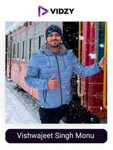
16. Vishwajeet Singh Monu
YouTube Channel: VS MONU
USP:
He will give you insights on those topics which are less talked about.
Each video on this channel demonstrates how much vishwajeet loves to travel. He is the first YouTuber to have traveled 70% of the state by train and the first to begin a video by screening his face. After four years of diligent preparation, he was selected for the Navy and the Air Force when he was in the 12th grade. He began his training. After feeling unsatisfied, he started making YouTube videos that were focused on his travelling, career, etc.
More than 18 million people watched his video, "Journey to the most dangerous railway track on earth," and it received 317 thousand likes and 7129 comments. Additionally, he has 57.6K Instagram followers. He is influenced by a number of well-known vloggers who are experimenting with new material, including Mumbiker Nikhil, Gaurav zone of Delhi, and Umesh. When creating a masterpiece video, he makes an effort to maintain objectivity and avoid offending any particular group's sensibilities. This explains why his audience is engaged and leaves numerous comments on his writing. He talks about the benefits and drawbacks of each train. He is now invited specifically whenever a train is about to be launched due to his current success making his channel one of the best travel Youtube channels India.
-
17. Shakti Singh Shekhawat
YouTube Channel: TravelingMondays
USP:
He will give you all the info you need regarding your favourite places.
Shakti is a travel filmmaker whose casual style of travel shows in his recorded videos. It's not crucial that we see the entire world, he claims. What Matters Is That We All See The World Together. This is exactly what Shakti wants to accomplish—he wants to allow others to view the world through his lenses.
Yaar, let's move to the mountains and work from there, how many of us have said. Traveling on Mondays has in fact accomplished this. With assistance from the unconventional travel network GYPSYENIA, he relocated to Manali for a month-long workation. Check out his vlog to see the 4 fascinating places he stayed, which will inspire some fantastical work vacation goals for you!
Trekking enthusiasts would adore his Kedarkantha winter trek series, which was planned with ThrillHikers Travel and shot with his professional equipment from Harman Pro India. Along with his subscribers, a few old friends set out on the trek. Did you know that Goa offers bungee jumping? Shakti scheduled his jump through the ex-military company Jumpin Heights.
Kerala Tourism, Discover Northeast, etripto.in, Sony Alpha India, Sennheiser India, and other companies have worked together with Traveling Mondays. Shakti is well on his way to realizing his dream, as evidenced by the 500k subscribers and over 33 million cumulative views on the channel. Check out one of the best travel youtube channels India
-
18. Kritika Goel
YouTube Channel: Kritika Goel
USP:
She can change your mood with her travel videos generating great vibes.
Kritika Goel, a representative for Canon, enjoys traveling and capturing the places she visits on camera. There are over 563k subscribers to her YouTube channel, and she has about 67 million total viewers.
Did you know that the Meghalaya River in India is the cleanest river in all of Asia? In its crystal-clear waters, Kritika went boating! The limestone Mawsmai Caves, another attraction in this state, require some rock-jumping or rock-crawling in some areas. The Double Decker Living Root Bridge in Sohra is another landmark in the state.
This YouTube travel vlogger from India visited the Czech Republic alongside the nation's tourism board. She explored unusual areas of Prague like Letna Park, DOX, and the art district as well as beer spas (it's the Czech Republic, so it should come as no surprise that they have beer spas). She toured Hong Kong using Tripoto and the city's tourism bureau. Would you be interested in riding the 800 m long, 13-part, longest escalator in the world? Undoubtedly, that would be a thrilling ride.
Epidemic Sound, Goibibo, Motionleap by Lightricks, Honda Car India, Samsung India, Duroflex, etc. are just a few of the companies that have joined Kritika. Kritika is one of the top travel vloggers in India and has some serious travel inspiration on her digital home. Check out the content of one of the best Indian female travel vloggers on YouTube.
-
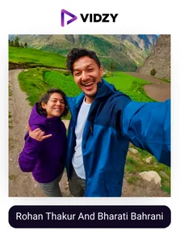
19. Rohan Thakur And Bharati Bahrani
YouTube Channel: RonnieBarty
USP:
This duo will make you addicted with their interesting travel videos including professional shots, humor and lots of information.
The filmmaking team hopes that others who travel will experience a similar bond with the mountains. With their exquisitely filmed vlogs that capture Manali and its surrounding areas in all their glory, they are attempting to achieve this.
The Atal Rohtang Tunnel has been the subject of numerous discussions. The couple demonstrates what it's like and how it would improve Lahaul, which used to be impassable during the winter, in terms of its economy and quality of life.
The small villages in Manali where the locals reside and go about their daily lives are brought to life in their videos. These tales will entice you to travel to such off-the-beaten-path locations rather than the usual tourist hotspots. Simply relax and sip your coffee while observing the sunrise. R&B wants you to take leisurely journeys that enrich your soul with unforgettable adventures.
R&B's 356k subscribers, who have collectively viewed their uploads over 26 million times, demonstrate how much the public appreciates what they're trying to accomplish. The following companies have worked with them because they share their vision: Musicbed, Sleepy Owl Coffee, Rati's Homemade, OGIO India, Airbnb, and Tripoto.
-
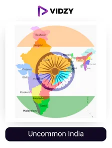
20. Uncommon India
YouTube Channel: Uncommon India
USP:
This channel will teach you all about the rich heritage and places to visit.
India has a diverse range of natural diversity because of its unique geographic location. India may be the only country in the world with such a wide variety of seasons. There is a lot of rain during the hot and muggy summers. Both cold and hot winters exist. They all contributed to the beauty of India. Our nation is represented by its beauty, diversity, and sense of community. The Himalayas are a solid mass in their northern and eastern portions. Their Highness makes sure that the area is blessed with peace all year long (pun intended). Not only Hindu mythology but also Tibetan and Chinese folklore regard the Himalayas as holy places.
India's southern regions have left a rich architectural and structural legacy that showcases the impeccable craftsmanship of Indian artisans. And this channel is dedicated to presenting it to you in its entirety.
A YouTube channel called "Uncommon India" is dedicated to providing you with the best travel advice making it one of the finest and underrated top Indian travel YouTuber. Reviews of popular tourist destinations in India are regularly published on this channel. Additionally, they serve as tour guides, so if you want to visit any location in India, you should learn more about it from them first.
To Sum Up
Want to know the secret to top Indian travel vloggers' enormous success on YouTube? They travel to novel, unusual locations and share them with us. Each video we watch adds to our growing list of places to visit! Their travel stories captivate and captivate the audience.
They are therefore perfect for businesses wishing to target new consumers or retarget current ones. And It has never been easy, thanks to Vidzy who makes the best video content that will attract the right customers and skyrocket your profits as they rope in the ideal creator, make the perfect script and campaign which then in turn attracts the audience in such a way that it expands with word of mouth marketing which gets twice the amount of sale that you can get in paid advertising only as per mckinsey.
So, what are you waiting for? Contact us to boost your business today!